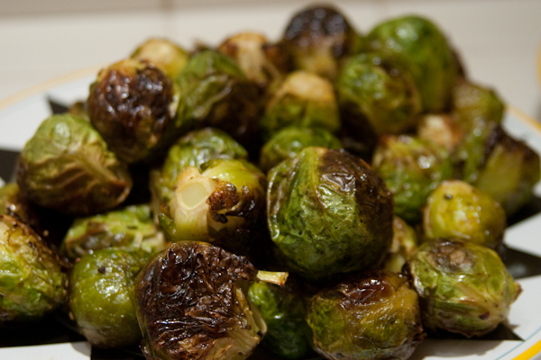

Oven-Roasted Brussels Sprouts

Ingredients
- 1.5 lb brussels sprouts
- 3 tbsp olive oil
- 3/4 tsp kosher salt
- 1/2 tsp freshly ground black pepper
Directions
- Prehead oven to 400 degres F.
- Cut off the ends of the brussels sprouts and pull off any yellow outer leaves.
- Mix the brussels sprouts in a bowl with the olive oil, salt, and pepper.
- Put the brussels sprouts on a baking sheet and roast for 35 - 40 minutes until crisp.